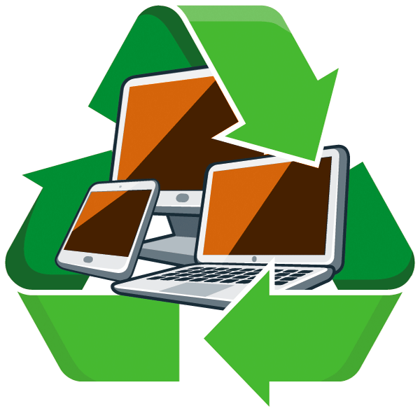
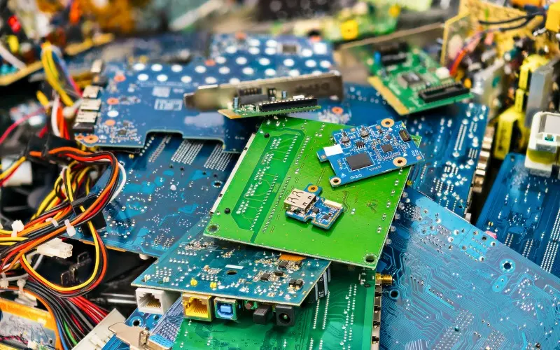
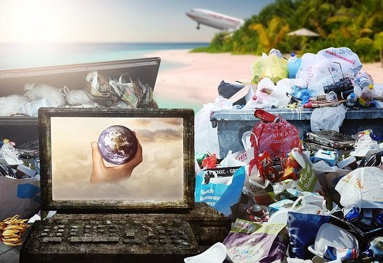

Concientización del impacto ambiental del mal desecho de aparatos electrónicos y cómo reutilizarlos y/o desecharlos.

Filosofía institucional: El Instituto Tecnológico de Querétaro (ITQ) tiene como objetivos la reducción de desechos plásticos de un solo uso, pero a su vez en nuestro laboratorio de electrónica se hace recolección de dispositivos electrónicos, para darles una segunda vida u otros usos para proyectos del alumnado del ITQ.
Justificación: Para dar a conocer y concientizar a la población estudiantil y a su vez se haga eco, ya que según el programa para el Medio Ambiente de las Naciones Unidas, a nivel mundial se generan cerca de 50 millones de toneladas de desechos electrónicos al año, la mayoría de residuos no pasan por un proceso de reciclaje óptimo, lo cual puede afectar a la salud humana.
Información:
¿Qué es la basura electrónica?
Un dispositivo electrónico se compone de muchos componentes de plástico, cerámicos, metálicos. Si estos no se separan no se pueden tal cúal reutilizar comúnmente, en comparación de cuando se separan y clasifican, es más fácil de emplear en otros procesos y darles una “segunda vida”. Se pueden encontrar hasta 60 diferentes elementos químicos en un solo dispositivo y algunos de ellos son técnicamente recuperables, mientras que otros son casi imposibles de extraer. Metales como el aluminio, oro, plata, cobre, níquel, cadmio, platino y paladio, entre otros, se pueden reutilizar en procesos industriales.
En la mayoría de componentes se encuentran materiales altamente contaminantes como peligrosos tales como silicio, mercurio, plomo, cadmio, plomo, cromo, arsénico o antimonio. Según el artículo de National Geographic que habla sobre la contaminación de los componentes electrónico, un solo tubo de luz fluorescente puede contaminar 16.000 litros de agua; una batería de níquel-cadmio de las empleadas en telefonía móvil, 50.000 litros de agua; mientras que un televisor puede contaminar hasta 80.000 litros de agua.
Para el año 2017 la mitad de la población mundial ya utilizaba internet, redes y servicios móviles, lo que tuvo como consecuencia que muchas personas utilizarán más de un dispositivo electrónico, promoviendo con esto, ciclos de reemplazo cada vez más cortos con el fin de adquirir mejor tecnología. Lógicamente el recambio frecuente de dispositivos electrónicos genera más basura.
Según un artículo de la UNAM Los principales productores de basura electrónica han sido agrupados por continente, siendo Asia el principal productor en el año 2014 con un 40.7% de la basura electrónica a nivel mundial, seguido por Europa con un 27.5%, América con un 25.3%, África con el 5% y Oceanía con 1.6%

¿Qué es la basura electrónica?
Según la UNAM y el IIES un dispositivo electrónico está formado por una amplia variedad de materiales metálicos y plásticos. Cuando estos materiales se mezclan y ya no pueden aprovecharse, se consideran basura; en cambio, los residuos que se separan adecuadamente pueden reutilizarse en distintos procesos productivos. En un solo dispositivo pueden encontrarse hasta 60 elementos químicos diferentes, algunos de los cuales pueden recuperarse, mientras que otros resultan muy difíciles de extraer. Metales como el aluminio, oro, plata, cobre, níquel, cadmio, platino y paladio pueden reutilizarse en la industria. Sin embargo, ciertos compuestos como los plásticos especialmente los difenil éteres polibromados pueden representar varios riesgos para la salud.
Implementación:
Reutilizar las piezas de varios aparatos electrónicos, podemos usar varios componentes para crear cosas nuevas, ya sean resistencias, leds, potenciómetros, botones, circuitos integrados, generadores u otros componentes, de esta forma estamos reciclando y alargando la vida útil de los componentes, sin afectar al medio ambiente en el proceso.

Otra cosa que podemos hacer es ir a varios centros de reciclaje o tiendas de electrónica, un centro de reciclaje aquí en Querétaro es Recicla Electrónicos México (REMSA).
{kind=link}
{kind=link}
{kind=link}